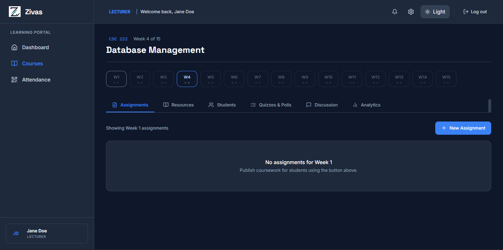
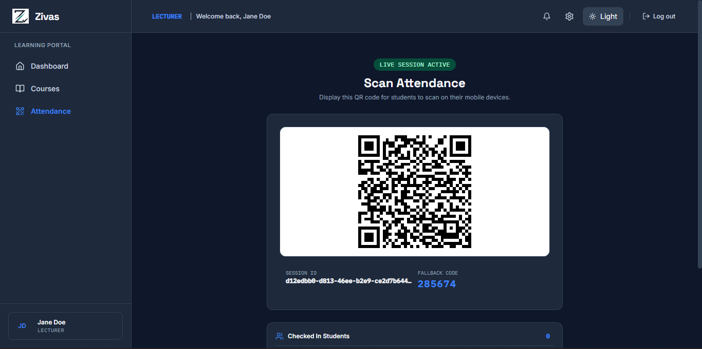
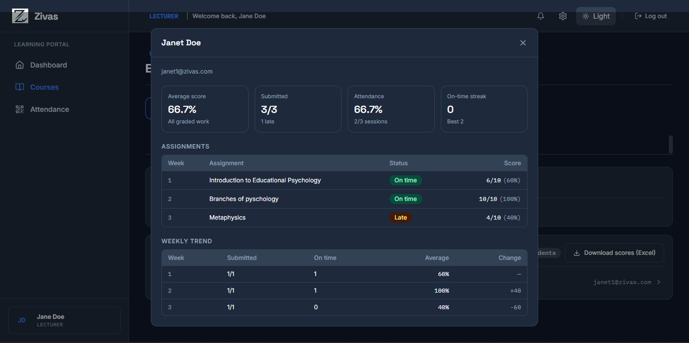

⌂
Lead with a wider view.
Coordinate departments, courses, staff and student accounts. Follow attendance, submissions and published performance across the institution.
For institutions ↗ZIVAS brings the work around learning into one clear view — helping institutions coordinate people, courses, participation and academic progress without adding another layer of complexity.


Participation & attendance
Progress & insightAcademic activity is connected. The systems used to manage it often are not.
Departments, courses, attendance, assignments, feedback and performance all tell part of the same story. ZIVAS brings these essential workflows together so people can spend less time chasing information and more time acting on it.
Why we are building ZIVASKeep institutional oversight, everyday teaching and learner progress connected — with access shaped around each role.
Coordinate departments, courses, staff and student accounts. Follow attendance, submissions and published performance across the institution.
For institutions ↗Organise resources, assignments, quizzes, attendance, discussions and grading in a focused lecturer workspace.
For educators ↗Give students a clear place to access course resources, submit work, participate and follow released feedback and progress.
For students ↗Move from a broad institutional view into the course activity and records that help explain it.

Review activity across departments and courses, then open the records behind the numbers when follow-up is needed.

Give lecturers a practical workspace for the tasks that keep a course moving, from sharing materials to reviewing student submissions.
Departments, courses, people and role-based access.
Weekly activities, learning resources and course communication.
Collect student work, review submissions and publish grades.
QR and code-based attendance workflows and records.
Timed course quizzes and classroom response activities.
Course activity, attendance, submissions and published results.
We are deliberately focused on the operational layer around learning. ZIVAS is not trying to become every tool an institution might use.
Discover our approach ↗Useful workflows, without unnecessary complexity.
Educators and academic leaders remain responsible for decisions.
Clear about what is available today and what is still being developed.
We distinguish production workflows from work that is still being prepared. No inflated promises, no hidden caveats.
Institution administration, course workspaces, assignments, manual grading, attendance, quizzes, feedback and performance views.
AI-assisted grading is currently disabled in production. Uploaded resources can be saved locally for offline access; full offline application support is still evolving.
Let's walk through your academic structure and the workflows you want to improve.